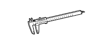
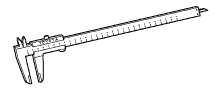

ПЕРЕДНИЙ ТОРМОЗ > ПРОВЕРКА > Подготовка

| Съемник хомутов | - |
| Индикатор часового типа с магнитной подставкой | - |
| Микрометр | - |
| Линейка | - |
| Динамометрический ключ | - |
 | 09017-1C100 | Разрезная головка 10 мм | - |
|  | 09072-1C200 | Штангенциркуль 150 мм | - |
|  | 09072-1C210 | Штангенциркуль 300 мм | - |
| Параметр | Объем | Классификация |
| Тормозная жидкость | - | SAE J1703 или FMVSS № 116 DOT 3 |